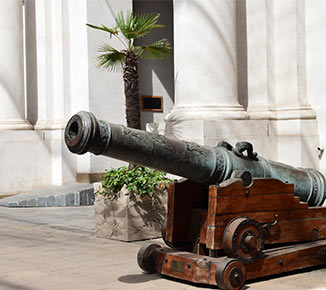
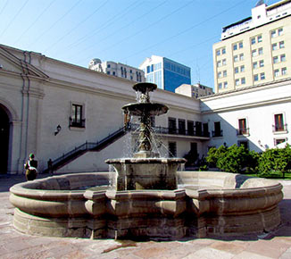
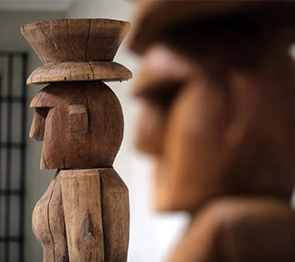
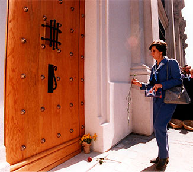

Puedes conocer toda la historia que esconden las antiguas paredes del Palacio La Moneda en nuestras visitas
guiadas. Hay dos guías disponibles en español/inglés para hacer un recorrido por la planta baja, los salones más emblemáticos y los principales patios.
Además, en el recorrido podrás conocer la puerta Morandé 80, el Centro Cultural La Moneda y a grandes maestros de la cultura que Chile ha
dado al mundo, como Neruda, Mistral, Marra, Huidobro y Rojas. A continuacion, te mostraremos los cinco atractivos del palacio según el orden que
muestras guías turísticas:
Patio de los Cañones
El espacio está adornado con dos grandes cañones de bronce “Furioso” y “Tronador”, instalados en este Patio que da a calle
Moneda y que debe su nombre a estas reliquias bélicas, hechas en Lima en 1771 y 1772 por orden del virrey Manuel de Amat, antiguo
Gdor. Gobernador de Chile, y ejecutadas por el fundidor Juan de Espinoza, quien cinceló en la cara superior
de ambas piezas las armas reales de España.
En el frente norte, de tres pisos, está el único zaguán de acceso que inicialmente tuvo La Moneda, donde se controlaba el ingreso
y salida de personas y metales. En este lugar existen también dos escaleras de piedra y dos puertas, enfrentadas entre sí. Estas dos
últimas, próximas a la calle Moneda, albergan las salas de guardia y portería. Junto con la Capilla, son hoy los únicos recintos que
conservan el uso que se les dio en el siglo XVIII.

Patio de los Naranjos
El histórico pabellón de menor altura que el resto del edificio cubría todo el patio y dejaba una calle que lo separaba del Palacio
por su frente y costados, y estuvo destinado a la balanza, acuñación y tesoro de la Real Casa. Allí se pesaba, fundía y acuñaba el oro
y la plata, guardándose en las salas que remataban los extremos de sus vastos salones. Ahí también se realizó un gran baile para
celebrar el aniversario de la primera Junta de Gobierno.
El tesoro del patio es la fuente que durante un siglo y medio dio agua a los santiaguinos, originalmente instalada en la Plaza de Armas.
Hay unas cuantas esculturas, entre las que destaca Tolomiro-Todomiro de Roberto Matta, obra expuesta en el pabellón
chileno en la Exposición Universal de Sevilla de 1992.

Patio del Canelo
También es conocido como Patio de Invierno. Su nombre actual se debe al canelo sembrado en honor a los pueblos originarios del Chile. Este es
un árbol sagrado para el pueblo mapuche.
Cuando la Real Casa de Moneda pasó a ser también Residencia de los Presidentes y Sede de Gobierno, este patio albergó a la Guardia hasta antes del
bombardeo de 1973, se ubicaba el Gabinete del Presidente de la República.
Actualmente, las oficinas que rodean el primer piso son ocupadas por el Ministerio del Interior,
mientras que en el segundo se encuentra el Gabinete de la Dirección Sociocultural
de la Presidencia de la República. En este mismo sector de Palacio se encuentra la entrada de Morandé 80, antiguo acceso privado de los Presidentes en los años en que La
Moneda era su lugar de residencia.

Morandé 80
Uno de los momentos más significativos del recorrido, es frente a la puerta de Morandé 80, ubicada en la fachada este del Palacio. Por esta puerta
sacaron sin vida el Pdte. Salvador Allende durante el golpe de estado de 1973.
Luego de la reconstrucción de La Moneda Augusto Pinochet decidió clausurar la puerta, porque se había convertido en un poderoso símbolo
entre sus adversarios. Esta puerta fue mandada a construir por otro presidente de Chile en 1906, Pedro Montt Montt, como un acceso más discreto al Palacio,
donde no recibía el saludo protocolar de la cada vez que lo traspasaba.
Actualmente la puerta está en un pequeño salón donde se exponen las monedas conmemorativas de los presidentes de Chile.

Centro Cultural La Moneda
Dedicado al desarrollo, estudio, difusión, fomento y conservación del arte, la cultura y la educación.
Su objetivo es ofrecer al público el acceso a las diferentes manifestaciones culturales del ámbito visual y audiovisual, del país y el extranjero,
presentando grandes exposiciones, ciclos de cine y actividades de extensión.
Con esa visión, los chilenos han tenido acceso a muestras de nivel internacional como “Antigua China y el Ejército de Terracota”
y las Máscaras del Ecuador.
Fue construido como una obra del Bicentenario, en el acceso sur del Palacio de La Moneda. Cuenta con 3 niveles,
donde se distribuyen salas para exposiciones, la Cineteca Nacional, cafetería, una tienda artesanal y restaurante.